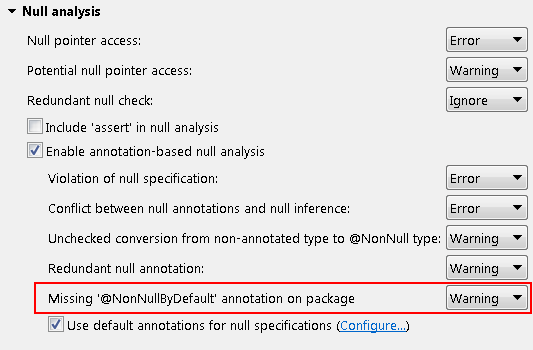

Here are some of the more noteworthy things available in milestone build M6
(March 16, 2012) which is now available for download.
Unless otherwise indicated, all entries listed here are available in both the 3.8 and 4.2 development streams.
See the build notes for details about bugs fixed and other changes.
| Equinox |
[ Not available yet ] |
| Platform |
[ Not available yet ] |
| Resources
|
[ Not available yet ] |
| SWT
|
[ Not available yet ] |
| Platform UI
|
[ Not available yet ] |
| User Assistance
|
[ Not available yet ] |
| Platform Text
|
[ Not available yet ] |
| Team/CVS
|
[ Not available yet ] |
| Compare
|
[ Not available yet ] |
| Ant
|
[ Not available yet ] |
Debug |
| RelaunchLastAction has been made API |
The internal class RelaunchLastAction has been promoted to API and can be found in the
org.eclipse.debug.ui.actions package.
|
| Add new expression image constant has been made API |
The constant IDebugUIConstants.IMG_OBJ_ADD_NEW_EXPRESSION has been added to API to allow consumers who
extend / use the Expressions view look-and-feel to use the Add New Expression icon
( ). ).
|
| Toggle breakpoints target manager has been made API |
The interface org.eclipse.debug.ui.actions.IToggleBreakpointsTargetManager has been made API to allow clients
access to known IToggleBreakpointTargets. The new API can be accessed via
org.eclipse.debug.ui.DebugUITools#getToggleBreakpointsTargetManager()
|
| BreakpointTypesContribution has been made API |
The class org.eclipse.debug.ui.actions.BreakpointTypesContribution has been added to API. This class
can be reused by clients to add a breakpoint type action in the editor gutter context menu to match the action(s) that appear in the
Run > Breakpoint Types menu.
|
| Find action can be customised in Variables View specialisations |
Consumer now have the ability to completely override the behaviour of the Find... action in the Variables View and any of
its sub-classes, e.g. Expressions View, Modules View, etc.
To replace the default Find... actions clients must provide an adapter for the
interface org.eclipse.debug.internal.ui.viewers.model.provisional.IViewActionProvider.
For more information see the Javadoc for org.eclipse.debug.internal.ui.viewers.model.provisional.IViewActionProvider
with an example available in the org.eclipse.debug.examples.ui bundle found in the Platform Debug Git repo.
|
| Improved launch configuration name validation |
Now if you create a launch configuration with the name of an existing configuration, the type of the conflicting configuration
is noted in the error message.

|
[ Not available yet ] |
| JDT |
| Selectively ignore errors/warnings from source folders |
You can now configure JDT to ignore optional errors/warnings from certain source folders.
Project properties > Java Build Path > Compiler > Source.

With this option set to Yes, JDT will suppress errors/warnings configured in the
Preferences > Java > Compiler > Errors/Warnings page. This can come in handy in situations such as those
when you have auto generated classes in some source folder and do not want to see optional errors/warnings in it.
|
| Detection of missing default nullness annotation |
You can now configure JDT to detect missing default nullness annotation when using the annotation-based null analysis. This can be configures
using Preferences > Java > Compiler > Errors/warnings > Missing '@NonNullByDefault' annotation on package.

When this option is enabled, JDT will issue an error/warning in the following cases:
- When a package does not contain a default nullness annotation, as a result of missing package-info.java
or missing default nullness annotation in package-info.java.

- When a type inside a default package does not contain a default nullness annotation.

Note that the option Use non-null as workspace wide (or project-wide) default has been withdrawn.
Instead, you can enable the Missing '@NonNullByDefault' annotation on package option and make sure you specify the default nullness
annotation on all types/packages.
|
| Null analysis treats org.eclipse.core.runtime.Assert like java assert |
Since org.eclipse.core.runtime.Assert is often used just like the java assert keyword, JDT's null analysis considers
the boolean expression passed into the former as always true after the Assert reference, since if the condition did turn out to be false,
the control flow will never go further than the org.eclipse.core.runtime.Assert reference.

|
| Resource leak detection improved and enabled by default |
Resource leak detection as introduced in JDT 3.8 M3 is now less aggressive if a resource
is shared between methods, possible via a field, where any party accessing the resource
could possibly issue the desired call to close(). This along with some fine tuning of the
analysis results in a greatly reduced number of false positives. Thus, the detection of a
definite resource leak is now much more reliable and reporting is set to warning by default.

|
| Incomplete switch over enum |
The JDT compiler raises a new warning whenever a switch over an enum value lacks a default case, and the option
Preferences > Java > Compiler > Errors/warnings > Incomplete 'switch' cases over enum is enabled.

This warning is recommended by the JLS, even if all enum constants are handled
by individual case statements in order to improve binary compatibility.
Note, that in cases like the above the warning also helps to understand another
error reported against the last statement:
"The local variable printString may not have been initialized",
which is reported because clients could possibly call the method print with a
enum value that has not been known at the time of compiling this method.
|
| Show Monitors on by default |
The default setting for displaying monitor information in the Debug View is now set to on.
This change only affects new workspaces and does not change existing settings.
Showing monitor information can be turned on or off using the Java > Show Monitors view action
within the Debug View.
|
| Toggle breakpoint modifier keys |
There is now support for modifier keys while toggling breakpoints in the Java editor. Currently the Ctrl
and Alt keys are supported which do the following:
- Holding the
Ctrl key while double-clicking (toggling) a breakpoint will cause the properties
dialog for that breakpoint to be displayed
- Holding the
Alt key while double-clicking (toggling) a breakpoint will enable / disable that breakpoint
If there is no breakpoint while holding a modifier key a normal breakpoint toggle takes place.
|
| PDE |
[ Not available yet ] |
| Template
|
| First item |
Item blurb.
|
| |
The above features are just the ones that are new since the previous milestone
build. Summaries for earlier Juno milestone builds: